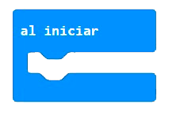
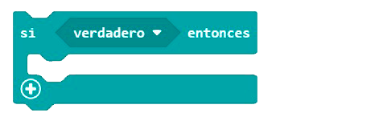
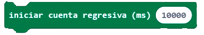
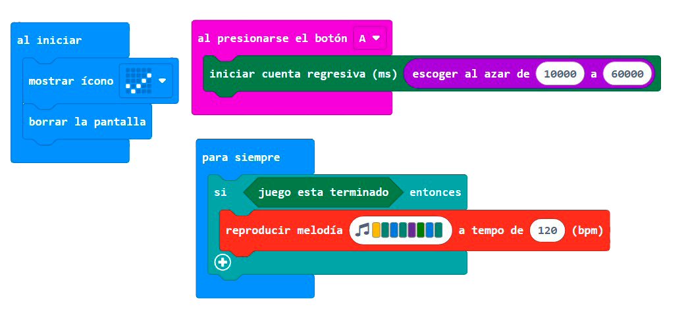

Nuestra Micro:bit puede explotar

El objetivo es diseñar un juego al que llamaremos Bomba:bit simulando que la placa es un dispositivo que puede explotar al alcanzar un tiempo determinado. Para ello, utilizaremos alguno de los bloques de entradas (botón A) para comenzar a jugar y con los bloques avanzados de juego y matemática (azar) crearemos una cuenta atrás que varíe entre dos números elegidos.

- Entorno de programación por bloques MaKeCode https://makecode.microbit.org/
- Entradas (botones de la placa)
- Bloques matemáticos: azar
- Funciones avanzadas: juego.
- Bloques de lógica.
- Recursos necesarios: placa micro:bit, ordenador, adaptador USB a micro-USB, porta pilas y pilas AAA.
- Juego en grupo.
|  |  |  |
 |
Unidades de tiempo
El microsegundo es la unidad de tiempo que equivale a la millonésima parte de un segundo. Se abrevia μs
60 segundos = 60000 milisegundos.


Enlace al código del proyecto https://makecode.microbit.org/_8JzL7wR5ebye